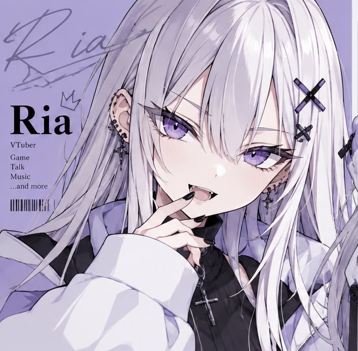
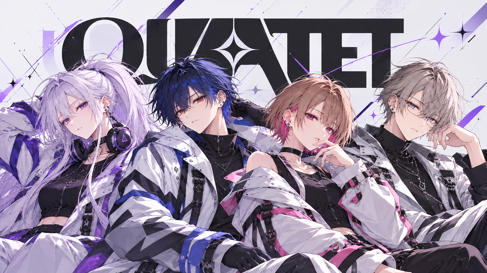
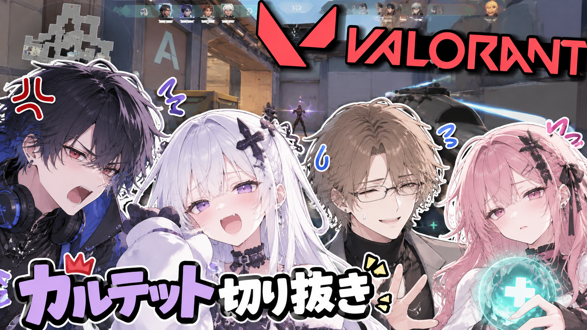
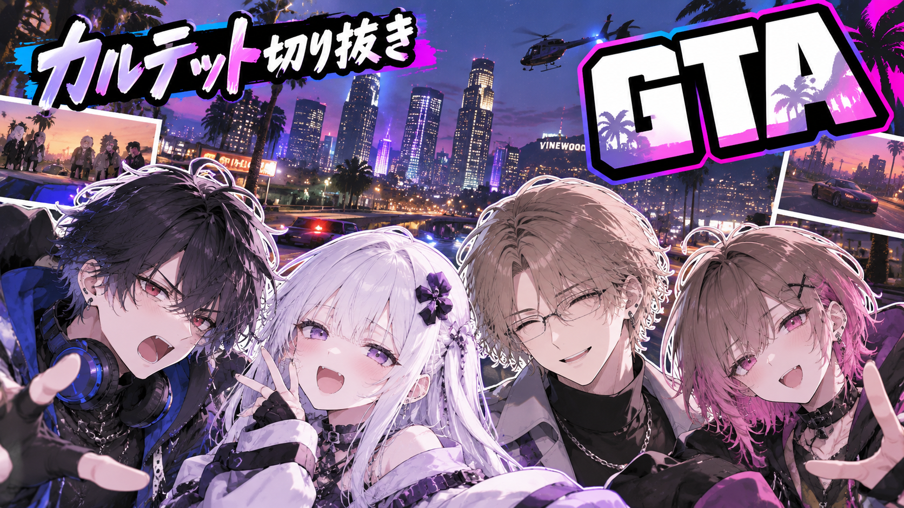

Ria
年齢：17歳
イメージカラー：紫・白
ひとこと：帰宅部のうるさい部長

Ria・Ren・Shin・Yunaによる4人組。 長年一緒にゲームをしてきた仲であり、「QUARTET」の名で親しまれている。
この4人なら、最強。
FAN-MADE · NOT OFFICIAL4人について、ファン目線でざっくり。
カルテットの「なんとなく分かる」年表。
もともとはRenとRia、YunaとShinのペアで活動。APEXをきっかけに仲良くなる。
Riaが配信を開始。Apexで仲良くなった2人がその配信を訪れたともいわれている
Riaが海外への留学を発表。大人組も繁栄期に入り一時的疎遠に。この頃にリスナーが「カルテット」を命名
社会人になりしばらく離れていた2人が復活。「久々に4人揃います！！」という投稿だけでファンがざわつく。
喧嘩する2人、夕飯を決める2人、そして誰も話を聞いていない4人。
「うるさくなる予定です」の宣言どおり、本当にうるさくなる。
配信の名場面・迷場面。

「うるせぇ！！」 「お前が言うな！！」 「ちょっと待ってｗｗ」

それぞれ好き勝手に行動した結果、 会話も状況も全部めちゃくちゃになる4人。 Riaが死にまくりYunaが救助に走り,Renが怒鳴りに行きShinが鎮めるいつもの4人
※ ご本人様の映像ではございません。あくまでファンメイドです。